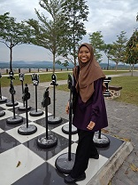
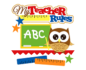

| Home Page | Biodata | Family | Movie | Experience | Education | Gallery |
|---|

My name is Farah Nabila binti Mohd Noor. I prefer to be called as Nabila. I grew up at Pasir Gudang, Johor with family of six. I am the first of four siblings and the only daughter in family. I was born in Johor in July 2000. Now, I was 20 years old. I live here about 20 years and I familiar with this place. There have many interesting place here even though this place near factory. This place also organizes a festival which known as “Festival Layang-Layang Sedunia Pasir Gudang”. There have many big kite from people around world. So, this festival was one of best thing that be held in Pasir Gudang.

I want to be a teacher. I hope one day I can realise my ambition to teach people because it was a good ambition and it can make the knowledge more valuable if we share it with others.My hobbies anyway are I like to read books. I also have few collections of book in my room and has a mini library. Besides, I also like to watch movies. I prefer to watch comedies movie. It is because by watching comedy I can release my stress. .
I like to eat Tom yum which is a type of hot and sour Thai soup. It usually cooked with shrimp and other seafood, but I like Chicken Tom yum. After that, is my favourite drink. I like drink that sour usually using lime. I prefer lime ice because it has a good flavour at the same time it good to health.